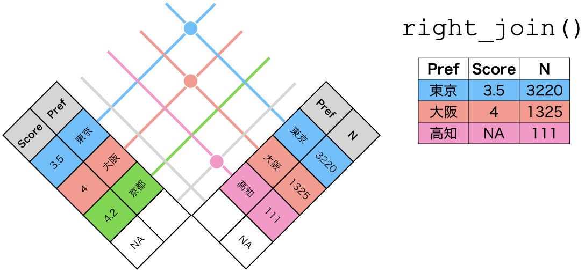

13 データハンドリング [拡張]
前章ではデータの一部 (subset)を抽出する方法について説明しましたが、本章はデータを拡張する、あるいは全く別のデータが得られるような処理について解説します。後者は主に元のデータを要約し (記述統計量)、その結果を出力する方法で、前者はデータ内の変数に基づき、指定された計算を行った結果を新しい列として追加する方法です。今回も前章と同じデータを使用します。
データの詳細については第12.3章を参照してください。
13.1 記述統計量の計算
13.1.1 summarise()による記述統計量の計算
ある変数の平均値や標準偏差、最小値、最大値などの記述統計量 (要約統計量)を計算することも可能です。これはsummarize()またはsummarise()関数を使いますが、この関数は後で紹介するgroup_by()関数と組み合わせることで力を発揮します。ここではグルーピングを考えずに、全データの記述統計量を計算する方法を紹介します。
summarise()関数の使い方は以下の通りです。
もし、Score変数の平均値を計算し、その結果をMeanという列にしたい場合は以下のようなコードになります。
ただし、mean()関数は欠損値が含まれるベクトルの場合、NAを返します。この場合方法は2つ考えられます。
filter()関数を使ってScoreが欠損しているケースを予め除去する。na.rm引数を指定し、欠損値を除去した平均値を求める。
ここでは2番目の方法を使います。
dfのScore変数の平均値はNAであることが分かります。また、summarise()関数は複数の記述統計量を同時に計算することも可能です。以下はScore変数の平均値、中央値、標準偏差、最小値、最大値、第一四分位点、第三四分位点を計算し、Score.Descという名のデータフレームに格納するコードです。
Score.Desc <- df %>%
summarize(Mean = mean(Score, na.rm = TRUE), # 平均値
Median = median(Score, na.rm = TRUE), # 中央値
SD = sd(Score, na.rm = TRUE), # 標準偏差
Min = min(Score, na.rm = TRUE), # 最小値
Max = max(Score, na.rm = TRUE), # 最大値
Q1 = quantile(Score, 0.25, na.rm = TRUE), # 第一四分位点
Q3 = quantile(Score, 0.75, na.rm = TRUE)) # 第三四分位点# A tibble: 1 × 7
Mean Median SD Min Max Q1 Q3
<dbl> <dbl> <dbl> <dbl> <dbl> <dbl> <dbl>
1 3.66 3.58 0.719 1 5 3 4むろん、複数の変数に対して記述統計量を計算することも可能です。たとえば、平均予算 (Budget)、口コミ数 (ScoreN)、口コミ評価 (Score)の平均値を求めるとしたら、
df %>%
summarize(Budget_Mean = mean(Budget, na.rm = TRUE), # 平均予算の平均値
SocreN_Mean = mean(ScoreN, na.rm = TRUE), # 口コミ数の平均値
Score_Mean = mean(Score, na.rm = TRUE)) # 評価の平均値# A tibble: 1 × 3
Budget_Mean SocreN_Mean Score_Mean
<dbl> <dbl> <dbl>
1 1232. 0.537 3.66のように書きます。実はsummarise()はこれくらいで十分便利です。ただし、以上の操作はもっと簡単なコードに置換できます。ただし、ラムダ式など、やや高度な内容になるため、以下の内容は飛ばして、次の節 (グルーピング)を読んでいただいても構いません。
まずは、複数の変数に対して同じ記述統計量を求める例を考えてみましょう。たとえば、Budget、ScoreN、Scoreに対して平均値を求める例です。これはacross()関数を使うとよりコードが短くなります。まずはacross()関数の書き方から見ましょう。
変数名のベクトルは長さ1以上のベクトルです。たとえば、Budget、ScoreN、Scoreの場合c(Budget, ScoreN, Score)になります。これはdf内で隣接する変数ですからBudget:Scoreの書き方も使えます。また、where()やany_of()、starts_with()のような関数を使って変数を指定することも可能です。関数名はmeanやsdなどの関数名です。ここは関数名()でななく、関数名であることに注意してください。引数は前の関数に必要な引数です。引数を必要としない関数なら省略可能ですが、na.rm = TRUEなどの引数が必要な場合は指定する必要があります。それではBudget、ScoreN、Scoreの平均値を計算してみましょう。
Warning: There was 1 warning in `summarize()`.
ℹ In argument: `across(Budget:Score, mean, na.rm = TRUE)`.
Caused by warning:
! The `...` argument of `across()` is deprecated as of dplyr 1.1.0.
Supply arguments directly to `.fns` through an anonymous function instead.
# Previously
across(a:b, mean, na.rm = TRUE)
# Now
across(a:b, \(x) mean(x, na.rm = TRUE))# A tibble: 1 × 3
Budget ScoreN Score
<dbl> <dbl> <dbl>
1 1232. 0.537 3.66across()使わない場合、4行必要だったコードが2行になりました。変数が少ない場合はacross()を使わない方が、可読性が高くなる場合もあります。しかし、変数が多くなる場合、可読性がやや落ちてもacross()を使った方が効率的でしょう。
次は、ある変数に対して複数の記述統計量を計算したい場合について考えます。Budget、ScoreN、Score変数の第一四分位点と第三四分位点をacross()を使わずに計算すると家のような7行のコードになります。
df %>%
summarize(Budget_Q1 = quantile(Budget, 0.25, na.rm = TRUE),
Budget_Q3 = quantile(Budget, 0.75, na.rm = TRUE),
ScoreN_Q1 = quantile(ScoreN, 0.25, na.rm = TRUE),
ScoreN_Q3 = quantile(ScoreN, 0.75, na.rm = TRUE),
Score_Q1 = quantile(Score, 0.25, na.rm = TRUE),
Score_Q3 = quantile(Score, 0.75, na.rm = TRUE))# A tibble: 1 × 6
Budget_Q1 Budget_Q3 ScoreN_Q1 ScoreN_Q3 Score_Q1 Score_Q3
<dbl> <dbl> <dbl> <dbl> <dbl> <dbl>
1 800 1000 0 0 3 4この作業もacross()を使ってより短縮することができます。ここではラムダ式の知識が必要になります。ラムダ関数とは関数名を持たない無名関数 (anonymous functions)を意味しますが、詳細は割愛します。興味のある読者はWikipediaなどを参照してください。簡単にいうとその場で即席に関数を作成し、計算が終わったら破棄する関数です。ただ、Rは基本的にラムダ式を提供しているのではなく、purrrパッケージのラムダ式スタイルを使用します。まずは、書き方から確認します。
先ほどの書き方と似ていますが、関数を複数書く必要があるため、今回は関数名をlist型にまとめ、.fns引数に指定します。そして、結果の変数名は結果として出力されるデータフレームの列名を指定する引数です。たとえば、Meanにすると結果は元の変数名1_Mean、元の変数名2_Mean…のように出力されます。そして、ラムダ式が実際の関数が入る箇所です。とりあえず今回はコードを走らせ、結果から確認してみましょう。
df %>%
summarize(across(Budget:Score,
.fns = list(Q1 = ~quantile(.x, 0.25, na.rm = TRUE),
Q3 = ~quantile(.x, 0.75, na.rm = TRUE))))# A tibble: 1 × 6
Budget_Q1 Budget_Q3 ScoreN_Q1 ScoreN_Q3 Score_Q1 Score_Q3
<dbl> <dbl> <dbl> <dbl> <dbl> <dbl>
1 800 1000 0 0 3 4結果の列名がBudget_Q1、Budget_Q3、ScoreN_Q1…のようになり、それぞれの変数の第一四分位点と第三四分位点が出力されます。問題はラムダ式の方ですが、普通の関数に非常に近いことが分かります。across()内のラムダ式は~関数名(.x, その他の引数)のような書き方になります。関数名の前に~が付いていることに注意してください。分位数を求める関数はquantile()であり、quantile(ベクトル, 分位数)であり、必要に応じてna.rmを付けます。この分位数が0.25なら第一四分位点、0.5なら第二四分位点 (=中央値)、0.75なら第三四分位点になります。それではラムダ式~quantile(.x, 0.25, na.rm = TRUE)はどういう意味でしょうか。これは.xの箇所にBudgetやScoreN、Scoreが入ることを意味します。.xという書き方は決まりです。.yとか.Song-san-Daisukiなどはダメです。そして、0.25を付けることによって第一四分位点を出力するように指定します。また、Budget、ScoreN、Scoreに欠損値がある場合、無視するようにna.rm = TRUEを付けます。
ラムダ式を第10章で解説した自作関数で表現すると、以下のようになります。
この3つは全て同じですが、ラムダ式は関数名を持たず、その場で使い捨てる関数です。むろん、ラムダ式を使わずに事前に第一四分位点と第三四分位点を求める関数を予め作成し、ラムダ式の代わりに使うことも可能です。まずは第一四分位点と第三四分位点を求める自作関数FuncQ1とFuncQ2を作成します。
後は先ほどのほぼ同じ書き方ですが、今回はラムダ式を使わないため関数名に~を付けず、関数名のみで十分です。()も不要です。
# A tibble: 1 × 6
Budget_Q1 Budget_Q3 ScoreN_Q1 ScoreN_Q3 Score_Q1 Score_Q3
<dbl> <dbl> <dbl> <dbl> <dbl> <dbl>
1 800 1000 0 0 3 4事前に関数を用意するのが面倒ですが、across()の中身はかなりスッキリしますね。もし、このような作業を何回も行うなら、ラムダ式を使わず、自作関数を用いることも可能です。ただし、自作関数であっても引数が2つ以上必要な場合はラムダ式を使います。
13.1.2 summarise()に使える便利な関数
以下の内容は後で説明するgroup_by()関数を使っているため、まだgroup_by()に馴染みのない読者はまずはここを読み飛ばし、グルーピングの節にお進みください。
IQR(): 四分位範囲を求める
四分位範囲は第三四分位点から第一四分位点を引いた値であり、Rの内蔵関数であるIQR()を使えば便利です。この関数はmeanやsd()関数と同じ使い方となります。
df %>%
filter(!is.na(Walk)) %>% # 予め欠損したケースを除くと、後でna.rm = TRUEが不要
group_by(Pref) %>%
summarise(Mean = mean(Walk),
SD = sd(Walk),
IQR = IQR(Walk),
N = n(),
.groups = "drop") %>%
arrange(Mean)# A tibble: 9 × 5
Pref Mean SD IQR N
<chr> <dbl> <dbl> <dbl> <int>
1 東京都 4.29 4.49 4 919
2 大阪府 5.92 6.08 6 932
3 神奈川県 8.21 7.91 10 878
4 京都府 8.38 6.95 9 339
5 兵庫県 8.52 7.27 10 484
6 奈良県 10.6 6.59 10 123
7 千葉県 10.6 8.21 12 776
8 埼玉県 11.6 8.99 14 817
9 和歌山県 12.8 6.83 9 107first()、last()、nth(): n番目の要素を求める
稀なケースかも知れませんが、データ内、またはグループ内のn番目の行を抽出する時があります。たとえば、市区町村の情報が格納されているデータセットで、人口が大きい順でデータがソートされているとします。各都道府県ごとに最も人口が大きい市区町村のデータ、あるいは最も少ない市区町村のデータが必要な際、first()とlast()関数が有効です。
それでは各都道府県ごとに「最も駅から遠いラーメン屋」の店舗名と最寄りの駅からの徒歩距離を出力したいとします。まずは、徒歩距離のデータが欠損しているケースを除去し、データを徒歩距離順でソートします。これはfilter()とarrange()関数を使えば簡単です。続いて、group_by()を使って都府県単位でデータをグループ化します。最後にsummarise()関数内にlast()関数を使います。データは駅から近い順に鳴っているため、各都府県内の最後の行は駅から最も遠い店舗になるからです。
df %>%
filter(!is.na(Walk)) %>%
arrange(Walk) %>%
group_by(Pref) %>%
summarise(Farthest = last(Name),
Distance = last(Walk))# A tibble: 9 × 3
Pref Farthest Distance
<chr> <chr> <dbl>
1 京都府 熱烈らぁめん 30
2 兵庫県 濃厚醤油 中華そば いせや 玉津店 43
3 千葉県 札幌ラーメン どさん子 佐原51号店 59
4 和歌山県 中華そば まる乃 30
5 埼玉県 札幌ラーメン どさん子 小鹿野店 116
6 大阪府 河童ラーメン本舗 岸和田店 38
7 奈良県 博多長浜らーめん 夢街道 四条大路店 29
8 東京都 てんがら 青梅新町店 30
9 神奈川県 札幌ラーメン どさん子 中津店 73このlast()をfirst()に変えると、最寄りの駅から最も近い店舗情報が表示されます。また、「n番目の情報」が必要な際はnth()関数を使います。nth(Name, 2)に変えることで2番目の店舗名が抽出できます。
n_distinct(): ユニーク値の個数を求める
n_distinct()は何種類の要素が含まれているかを計算する関数であり、length(unique())関数と同じ機能をします。たとえば、以下のmyVec1に対して何種類の要素があるかを確認してみましょう。
myVec1は"A"、"B"、"D"、"C"の要素で構成されていることが分かります。これがmyVec1のユニーク値 (unique values)です。そして、このユニーク値の個数を調べるためにlength()を使います。
これでmyVec1は4種類の値が存在することが分かります。これと全く同じ機能をする関数がn_distinct()です。
この関数をsummarise()に使うことで、都府県ごとに駅の個数が分かります。あるいは「東京都内の選挙区に、これまでの衆院選において何人の候補者が存在したか」も分かります。ここではdf内の都府県ごとに駅の個数を計算してみましょう。最後の駅数が多い順でソートします。
df %>%
filter(!is.na(Station)) %>% # 最寄りの駅が欠損しているケースを除去
group_by(Pref) %>%
summarise(N_Station = n_distinct(Station),
.groups = "drop") %>%
arrange(desc(N_Station))# A tibble: 9 × 2
Pref N_Station
<chr> <int>
1 東京都 368
2 大阪府 341
3 千葉県 241
4 神奈川県 240
5 兵庫県 199
6 埼玉県 185
7 京都府 123
8 奈良県 52
9 和歌山県 46当たり前かも知れませんが、駅数が最も多いのは東京都で次が大阪府であることが分かります。
any()、all(): 条件に合致するか否かを求める
any()とall()はベクトル内の全要素に対して条件に合致するか否かを判定する関数です。ただし、any()は一つの要素でも条件に合致すればTRUEを、全要素が合致しない場合FALSEを返します。一方、all()は全要素に対して条件を満たせばTRUE、一つでも満たさない要素があればFALSEを返します。以下はany()とall()の例です。
myVec1 <- c(1, 2, 3, 4, 5)
myVec2 <- c(1, 3, 5, 7, 11)
any(myVec1 %% 2 == 0) # myVec1を2で割った場合、一つでも余りが0か[1] TRUE[1] FALSE[1] TRUEそれでは実際にdfに対してany()とall()関数を使ってみましょう。一つ目は「ある都府県に最寄りの駅から徒歩60分以上の店舗が一つでもあるか」であり、二つ目は「ある都府県の店舗は全て最寄りの駅から徒歩30分以下か」です。それぞれの結果をOver60とWithin30という列で出力してみましょう。
df %>%
group_by(Pref) %>%
summarise(Over60 = any(Walk >= 60, na.rm = TRUE),
Within30 = all(Walk <= 30, na.rm = TRUE),
.groups = "drop")# A tibble: 9 × 3
Pref Over60 Within30
<chr> <lgl> <lgl>
1 京都府 FALSE TRUE
2 兵庫県 FALSE FALSE
3 千葉県 FALSE FALSE
4 和歌山県 FALSE TRUE
5 埼玉県 TRUE FALSE
6 大阪府 FALSE FALSE
7 奈良県 FALSE TRUE
8 東京都 FALSE TRUE
9 神奈川県 TRUE FALSE 埼玉県と神奈川県において、最寄りの駅から徒歩60以上の店がありました。また、京都府、東京都、奈良県、和歌山県の場合、全店舗が最寄りの駅から徒歩30分以下ということが分かります。当たり前ですがOver60がTRUEならWithin30は必ずFALSEになりますね。
13.2 グルーピング
13.2.1 group_by()によるグループ化
先ほどのsummarise()関数は確かに便利ですが、特段に便利とも言いにくいです。dfのScoreの平均値を計算するだけなら、summarise()関数を使わない方が楽です。
# A tibble: 1 × 1
Mean
<dbl>
1 3.66[1] 3.663457しかし、これをグループごとに計算するならどうでしょう。たとえば、Scoreの平均値を都府県ごとに計算するとします。この場合、以下のようなコードになります。
[1] 3.674256[1] 3.533931[1] 3.715983[1] 3.641573[1] 3.765194[1] 3.684976[1] 3.543936[1] 3.854762[1] 3.96999変わったのはdf$Scoreがdf$Score[df$Pref == "東京都"]に変わっただけです。df$Prefが"東京都"であるか否かをTRUEとFALSEで判定し、これを基準にdf$Scoreを抽出する仕組みです。df$Scoreとdf$Prefは同じデータフレームですから、このような書き方で問題ありません。
これだけでもかなり書くのが面倒ですが、これが47都道府県なら、あるいは200ヶ国ならかなり骨の折れる作業でしょう。ここで大活躍するのがdplyrパッケージのgroup_by()関数です。引数はグループ化する変数名だけです。先ほどの作業をdplyrを使うならPref変数でグループ化し、summarise()関数で平均値を求めるだけです。今回はScoreだけでなく、ScoreNの平均値も求めてみましょう。そして、評価が高い順にソートもしてみます。
# ScoreNとScoreの平均値をPrefごとに求める
df %>%
group_by(Pref) %>%
summarise(ScoreN_Mean = mean(ScoreN, na.rm = TRUE),
Score_Mean = mean(Score, na.rm = TRUE)) %>%
arrange(desc(Score_Mean))# A tibble: 9 × 3
Pref ScoreN_Mean Score_Mean
<chr> <dbl> <dbl>
1 和歌山県 0.593 3.97
2 奈良県 0.306 3.85
3 大阪府 0.516 3.77
4 千葉県 0.259 3.72
5 京都府 0.522 3.68
6 東京都 1.16 3.67
7 埼玉県 0.278 3.64
8 兵庫県 0.389 3.54
9 神奈川県 0.587 3.53評判が最も高い都府県は和歌山県、最も低いのは神奈川県ですね。Songも和歌山ラーメンは井出系も車庫前系も好きです。しかし、大事なのは「井出系」と「車庫前系」といった分類が正しいかどうかではありません。コードが非常に簡潔となり、ソートなども自由自在であることです。都府県ごとにScoreNとScoreの平均値を求める場合、dplyr()を使わなかったら18行のコードとなり、ソートも自分でやる必要があります。一方、group_by()関数を使うことによってコードが5行になりました。
また、これは2020年6月に公開されたdplyr1.0.0からの問題ですが、group_by()の後にsummarise()を使うと以下のようなメッセージが出力されます。
## `summarise()` ungrouping output (override with `.groups` argument)これはgroup_by()で指定された変数のグループ化が自動的に解除されたことを意味します。なぜならsummarise()をする際はPrefをグループ変数として使いましたが、出力された結果のPref変数はもはやグループとして機能できなくなるからです。元のdfにはPrefが"東京都"だったケースが1000行、"京都府"だったのが414行あったので、Pref変数でグループ化する意味がありました。しかし、summarise()から得られたデータフレームはPref == "東京都"の行が1つしかありません。これはグループ化する意味がなくなったことを意味します。したがって、自動的にグループを解除してくれます。自動的にやってくれるのはありがたいことですが、可能ならば関数内に自分で明記することが推奨されます。そこで使う引数が.groupsであり、"drop"を指定すると全てのグループ化変数を解除します。以下のようなコードだと先ほどのメッセージが表示されません。今後、意識的に入れるようにしましょう。
# ScoreNとScoreの平均値をPrefごとに求める
df %>%
group_by(Pref) %>%
summarise(ScoreN_Mean = mean(ScoreN, na.rm = TRUE),
Score_Mean = mean(Score, na.rm = TRUE),
.groups = "drop") %>%
arrange(desc(Score_Mean))# A tibble: 9 × 3
Pref ScoreN_Mean Score_Mean
<chr> <dbl> <dbl>
1 和歌山県 0.593 3.97
2 奈良県 0.306 3.85
3 大阪府 0.516 3.77
4 千葉県 0.259 3.72
5 京都府 0.522 3.68
6 東京都 1.16 3.67
7 埼玉県 0.278 3.64
8 兵庫県 0.389 3.54
9 神奈川県 0.587 3.53続いて、一つ便利な関数を紹介します。それはグループのサイズを計算する関数、n()です。この関数をsummarise()内に使うと、各グループに属するケース数を出力します1。先ほどのコードを修正し、各グループのサイズをNという名の列として追加してみましょう。そしてソートの順番はNを最優先とし、同じ場合はScore_Meanが高い方を上に出力させます。また、ScoreN_Meanの前に、口コミ数の合計も出してみましょう。
# Prefごとに口コミ数の合計、口コミ数の平均値、評価の平均値、店舗数を求める
# 店舗数-評価の平均値順でソートする
df %>%
group_by(Pref) %>%
summarise(ScoreN_Sum = sum(ScoreN, na.rm = TRUE),
ScoreN_Mean = mean(ScoreN, na.rm = TRUE),
Score_Mean = mean(Score, na.rm = TRUE),
N = n(),
.groups = "drop") %>%
arrange(desc(N), desc(Score_Mean))# A tibble: 9 × 5
Pref ScoreN_Sum ScoreN_Mean Score_Mean N
<chr> <dbl> <dbl> <dbl> <int>
1 大阪府 516 0.516 3.77 1000
2 千葉県 259 0.259 3.72 1000
3 東京都 1165 1.16 3.67 1000
4 埼玉県 278 0.278 3.64 1000
5 神奈川県 587 0.587 3.53 1000
6 兵庫県 230 0.389 3.54 591
7 京都府 216 0.522 3.68 414
8 奈良県 45 0.306 3.85 147
9 和歌山県 83 0.593 3.97 140記述統計をグループごとに求めるのは普通にあり得るケースですし、実験データの場合はほぼ必須の作業でう。統制群と処置群間においてグループサイズが均一か、共変量のバラツキが十分に小さいかなどを判断する際にgroup_by()とsummarise()関数の組み合わせは非常に便利です。
13.2.2 複数の変数を用いたグループ化
グループ化変数は2つ以上指定することも可能です。たとえば、都府県 (Pref)と最寄りの駅の路線 (Line)でグループ化することも可能です。それではPrefとLineでグループ化し、店舗数と口コミ数、評価の平均値を計算し、ソートの順番は店舗数、店舗数が同じなら評価の平均値が高い順にしましょう。今回もsummarise()内に.group = "drop"を指定し、グループ化を解除します。今回はTop 20まで出してみましょう。
# ScoreNとScoreの平均値をPrefごとに求める
df %>%
filter(!is.na(Line)) %>% # Lineが欠損していないケースのみ残す
group_by(Pref, Line) %>% # PrefとLineでグループ化
summarise(N = n(),
ScoreN_Sum = sum(ScoreN, na.rm = TRUE),
Score_Mean = mean(Score, na.rm = TRUE),
.groups = "drop") %>%
arrange(desc(N), desc(Score_Mean)) %>%
print(n = 20)# A tibble: 523 × 5
Pref Line N ScoreN_Sum Score_Mean
<chr> <chr> <int> <dbl> <dbl>
1 埼玉県 東武東上線 122 27 3.68
2 東京都 ＪＲ 104 231 3.56
3 神奈川県 小田急小田原線 96 31 3.59
4 埼玉県 東武伊勢崎線 96 18 3.51
5 神奈川県 横浜市営ブルーライン 82 77 3.66
6 千葉県 京成本線 82 29 3.34
7 神奈川県 京急本線 68 40 3.33
8 千葉県 東武野田線 63 2 4.75
9 神奈川県 小田急江ノ島線 62 8 3.79
10 大阪府 阪急京都本線 53 32 3.67
11 大阪府 南海本線 52 11 4.22
12 兵庫県 阪神本線 52 23 3.80
13 埼玉県 JR高崎線 51 5 4
14 兵庫県 山陽電鉄本線 51 15 2.98
15 千葉県 JR総武本線（東京-銚子） 47 8 4
16 埼玉県 西武新宿線 45 8 4.17
17 埼玉県 秩父鉄道線 43 10 3.82
18 大阪府 京阪本線 43 10 3.69
19 千葉県 新京成電鉄 43 6 3.6
20 京都府 阪急京都本線 43 27 3.5
# … with 503 more rowsぐるなびに登録されているラーメン屋が最も多い路線は埼玉県内の東武東上線で122店舗があります。東武東上線は東京都と埼玉県をまたがる路線ですので、東武東上線だけならもっと多いかも知れませんね。
ここで一つ考えたいのはsummarise()内の.groups引数です。前回はグループ化に使った変数ごとに1行しか残っていなかったのでグループ化を全て解除しました。しかし、今回は状況がやや異なります。グループ化変数に使ったPrefを考えると、まだPref == "東京都"であるケースがいくつかあります。やろうとすればまだグループ化出来る状態です。これはLineについても同じです。Line == "東武東上線"の行はここには表示されていないものの、まだデータに残っています。もし、これ以上グループ化しないなら今のように.groups = "drop"が正しいですが、もしもう一回グループ化したい場合はどうすればよいでしょうか。方法は2つ考えられます。
- もう一度パイプ演算子を使って
group_by()関数を使う (以下の9行目)。- 結果を見ると
## # Groups: Pref, Line [523]で、ちゃんとグループ化されていることが分かります。
- 結果を見ると
df %>%
filter(!is.na(Line)) %>%
group_by(Pref, Line) %>%
summarise(N = n(),
ScoreN_Sum = sum(ScoreN, na.rm = TRUE),
Score_Mean = mean(Score, na.rm = TRUE),
.groups = "drop") %>%
arrange(desc(N), desc(Score_Mean)) %>%
group_by(Pref, Line) %>% # group_by()、もう一度
print(n = 5)# A tibble: 523 × 5
# Groups: Pref, Line [523]
Pref Line N ScoreN_Sum Score_Mean
<chr> <chr> <int> <dbl> <dbl>
1 埼玉県 東武東上線 122 27 3.68
2 東京都 ＪＲ 104 231 3.56
3 神奈川県 小田急小田原線 96 31 3.59
4 埼玉県 東武伊勢崎線 96 18 3.51
5 神奈川県 横浜市営ブルーライン 82 77 3.66
# … with 518 more rows.groups引数を何とかする。
推奨される方法は2番です。具体的には.groups = "keep"を指定するだけであり、こっちの方が無駄なコードを省けることができます。
df %>%
filter(!is.na(Line)) %>%
group_by(Pref, Line) %>%
summarise(N = n(),
ScoreN_Sum = sum(ScoreN, na.rm = TRUE),
Score_Mean = mean(Score, na.rm = TRUE),
.groups = "keep") %>%
arrange(desc(N), desc(Score_Mean)) %>%
print(n = 5)# A tibble: 523 × 5
# Groups: Pref, Line [523]
Pref Line N ScoreN_Sum Score_Mean
<chr> <chr> <int> <dbl> <dbl>
1 埼玉県 東武東上線 122 27 3.68
2 東京都 ＪＲ 104 231 3.56
3 神奈川県 小田急小田原線 96 31 3.59
4 埼玉県 東武伊勢崎線 96 18 3.51
5 神奈川県 横浜市営ブルーライン 82 77 3.66
# … with 518 more rows.groups引数は"drop"と"keep"以外にも"drop_last"があります。実はsummarise()に.groups引数を指定したい場合のデフォルト値は.groups == "drop_last"または"keep"ですが、ここがややこしいです。主なケースにおいてデフォルト値は"drop"となりますとなります。.groups == "drop_last"これは最後のグループ化変数のみ解除する意味です。今回の例だと、2番目のグループ化変数であるLineがグループ化変数から外され、Prefのみがグループ化変数として残る仕組みです。
それではデフォルト値が"keep"になるのはいつでしょうか。それは記述統計量の結果が長さ2以上のベクトルである場合です。平均値を求めるmean()、標準偏差を求めるsd()などは、結果として長さ1のベクトルを返します。しかし、長さ2以上ののベクトルを返す関数もあります。たとえば、分位数を求めるquantile()関数があります。quantile(ベクトル名, 0.25)の場合、第一四分位点のみ返すため、結果は長さ1のベクトルです。しかし、quantile(ベクトル名, c(0.25, 0.5, 0.75))のように第一四分位点から第三四分位点を同時に計算し、長さ3のベクトルが返されるケースもありますし、第二引数を省略すると、最小値・第一四分位点・第二四分位点・第三四分位点・最大値、つまり、長さ5のベクトルが返される場合があります。
25%
2 0% 25% 50% 75% 100%
1 2 5 12 116 .groupsのデフォルト値が"keep"になるのは、このように長さ2以上のベクトルが返されるケースです。たとえば、都府県と最寄りの駅の路線でグループ化し、店舗までの徒歩距離の平均値を求めるとします。デフォルト値の変化を見るために、ここではあえて.groups引数を省略しました。
`summarise()` has grouped output by 'Pref'. You can override using the
`.groups` argument.# A tibble: 509 × 3
# Groups: Pref [9]
Pref Line Mean
<chr> <chr> <dbl>
1 京都府 JR奈良線 3.33
2 京都府 JR小浜線 16.5
3 京都府 JR山陰本線（京都-米子） 8.67
4 京都府 JR東海道本線（米原-神戸） 16.3
5 京都府 JR片町線〔学研都市線〕 9.4
6 京都府 JR舞鶴線 19
7 京都府 京福北野線 8.36
8 京都府 京福嵐山本線 6.5
9 京都府 京福電気鉄道嵐山本線 6
10 京都府 京都丹後鉄道宮福線 7.44
# … with 499 more rows最初はPrefとLineでグループ化しましたが、summarise()の後、Lineがグループ化変数から外されました。つまり、引数が"drop_last"になっていることです。
それでは、平均値に加えて、第一四分位点と第三四分位点も計算し、Quantileという名で格納してみましょう。
df %>%
filter(!is.na(Walk)) %>%
group_by(Pref, Line) %>%
summarise(Mean = mean(Walk),
Quantile = quantile(Walk, c(0.25, 0.75)))Warning: Returning more (or less) than 1 row per `summarise()` group was deprecated in
dplyr 1.1.0.
ℹ Please use `reframe()` instead.
ℹ When switching from `summarise()` to `reframe()`, remember that `reframe()`
always returns an ungrouped data frame and adjust accordingly.`summarise()` has grouped output by 'Pref', 'Line'. You can override using the
`.groups` argument.# A tibble: 1,018 × 4
# Groups: Pref, Line [509]
Pref Line Mean Quantile
<chr> <chr> <dbl> <dbl>
1 京都府 JR奈良線 3.33 2
2 京都府 JR奈良線 3.33 5
3 京都府 JR小浜線 16.5 9.75
4 京都府 JR小浜線 16.5 23.2
5 京都府 JR山陰本線（京都-米子） 8.67 2
6 京都府 JR山陰本線（京都-米子） 8.67 15
7 京都府 JR東海道本線（米原-神戸） 16.3 16
8 京都府 JR東海道本線（米原-神戸） 16.3 17
9 京都府 JR片町線〔学研都市線〕 9.4 2
10 京都府 JR片町線〔学研都市線〕 9.4 9
# … with 1,008 more rows同じPref、Lineのケースが2つずつ出来ています。最初に来る数値は第一四分位点、次に来るのが第三四分位点です。そして最初のグループ化変数であったPrefとLineが、summarise()後もグループ化変数として残っていることが分かります。
.groups引数は記述統計量だけを計算する意味ではあまり意識する必要がありません。しかし、得られた記述統計量から何らかの計算をしたり、さらにもう一回記述統計量を求めたりする際、予期せぬ結果が得られる可能性があるため注意する必要があります。出来る限り.groups引数は指定するようにしましょう。
13.3 変数の計算
13.3.1 mutate()関数の使い方
続いて、データフレーム内の変数を用いて計算を行い、その結果を新しい列として格納するmutate()関数について紹介します。まず、mutate()関数の書き方からです。
これは何らかの処理を行い、その結果を新しい変数としてデータフレームに追加することを意味します。新しく出来た変数は、基本的に最後の列になります。ここでは分単位であるWalkを時間単位に変換したWalk_Hour変数を作成するとします。処理内容はWalk / 60です。最後に、都府県名、店舗名、徒歩距離 (分)、徒歩距離 (時間)のみを残し、遠い順にソートします。
df %>%
filter(!is.na(Walk)) %>%
mutate(Walk_Hour = Walk / 60) %>%
select(Pref, Name, Walk, Walk_Hour) %>%
arrange(desc(Walk_Hour))# A tibble: 5,375 × 4
Pref Name Walk Walk_Hour
<chr> <chr> <dbl> <dbl>
1 埼玉県 札幌ラーメン どさん子 小鹿野店 116 1.93
2 神奈川県 札幌ラーメン どさん子 中津店 73 1.22
3 千葉県 札幌ラーメン どさん子 佐原51号店 59 0.983
4 神奈川県 札幌ラーメン どさん子 山際店 50 0.833
5 千葉県 札幌ラーメン どさん子 関宿店 49 0.817
6 兵庫県 濃厚醤油 中華そば いせや 玉津店 43 0.717
7 大阪府 河童ラーメン本舗 岸和田店 38 0.633
8 埼玉県 ラーメン山岡家 上尾店 35 0.583
9 兵庫県 濃厚醤油 中華そば いせや 大蔵谷店 35 0.583
10 大阪府 河童ラーメン本舗 松原店 31 0.517
# … with 5,365 more rowsmutate()は3行目に登場しますが、これはWalkを60に割った結果をWalk_Hourとしてデータフレームの最後の列として格納することを意味します。もし、最後の列でなく、ある変数の前、または後にしたい場合は、.beforeまたは.after引数を追加します。これはselect()関数の.beforeと.afterと同じ使い方です。たとえば、新しく出来たWalk_HourをIDとNameの間に入れたい場合は
のようにコードを修正します。
むろん、変数間同士の計算も可能です。たとえば、以下のようなdf2があり、1店舗当たりの平均口コミ数を計算し、ScoreN_Meanという変数名でScoreN_Sumの後に格納うするとします。この場合、ScoreN_Sum変数をNで割るだけです。
# A tibble: 9 × 6
Pref Budget_Mean ScoreN_Sum ScoreN_Mean Score_Mean N
<chr> <dbl> <dbl> <dbl> <dbl> <int>
1 京都府 1399. 216 0.522 3.68 414
2 兵庫県 1197. 230 0.389 3.54 591
3 千葉県 1124. 259 0.259 3.72 1000
4 和歌山県 1252 83 0.593 3.97 140
5 埼玉県 1147. 278 0.278 3.64 1000
6 大阪府 1203. 516 0.516 3.77 1000
7 奈良県 1169. 45 0.306 3.85 147
8 東京都 1283. 1165 1.16 3.67 1000
9 神奈川県 1239. 587 0.587 3.53 1000このように、データ内の変数を用いた計算結果を新しい列として追加する場合は、mutate()が便利です。これをmutate()を使わずに処理する場合、以下のようなコードになりますが、可読性が相対的に低いことが分かります。
むろんですが、計算には+や/のような演算子だけでなく、関数を使うことも可能です。たとえば、Budgetが1000円未満なら"Cheap"、1000円以上なら"Expensive"と示す変数Budget2を作成する場合はifelse()関数が使えます。
df %>%
mutate(Budget2 = ifelse(Budget < 1000, "Cheap", "Expensive")) %>%
filter(!is.na(Budget2)) %>% # Budget2が欠損した店舗を除外
group_by(Pref, Budget2) %>% # PrefとBudget2でグループ化
summarise(N = n(), # 店舗数を表示
.groups = "drop")# A tibble: 18 × 3
Pref Budget2 N
<chr> <chr> <int>
1 京都府 Cheap 22
2 京都府 Expensive 28
3 兵庫県 Cheap 39
4 兵庫県 Expensive 27
5 千葉県 Cheap 64
6 千葉県 Expensive 72
7 和歌山県 Cheap 10
8 和歌山県 Expensive 5
9 埼玉県 Cheap 37
10 埼玉県 Expensive 45
11 大阪府 Cheap 104
12 大阪府 Expensive 115
13 奈良県 Cheap 11
14 奈良県 Expensive 10
15 東京都 Cheap 206
16 東京都 Expensive 236
17 神奈川県 Cheap 66
18 神奈川県 Expensive 54これは各都府県ごとの予算1000円未満の店と以上の店の店舗数をまとめた表となります。もし、500円未満なら"Cheap"、500円以上~1000円未満なら"Reasonable"、1000円以上なら"Expensive"になるBudget3変数を作るにはどうすればよいでしょうか。第10章で紹介しましたifelse()を重ねることも出来ますが、ここではcase_when()関数が便利です。まずは、ifelse()を使ったコードは以下の通りです。
case_when()を使うと以下のような書き方になります。
# case_when()を使う場合
df %>%
mutate(Budget3 = case_when(Budget < 500 ~ "Cheap",
Budget >= 500 & Budget < 1000 ~ "Reasonable",
Budget >= 1000 ~ "Expensive"),
# 新しく出来た変数をfactor型にその場で変換することも可能
Budget3 = factor(Budget3,
levels = c("Cheap", "Reasonable", "Expensive"))) %>%
filter(!is.na(Budget3)) %>%
group_by(Pref, Budget3) %>%
summarise(N = n(),
.groups = "drop")書く手間の観点ではcase_when()はifelse()と大きく違いはないかも知れませんが、コードが非常に読みやすくなっています。case_when()関数の書き方は以下の通りです。
似たような機能をする関数としてrecode()関数があります2。これは変数の値を単純に置換したい場合に便利な関数です。たとえば、都府県名をローマ字に変換するケースを考えてみましょう。
# recode()を使う場合
df2 %>%
mutate(Pref2 = recode(Pref,
"東京都" = "Tokyo",
"神奈川県" = "Kanagawa",
"千葉県" = "Chiba",
"埼玉県" = "Saitama",
"大阪府" = "Osaka",
"京都府" = "Kyoto",
"兵庫県" = "Hyogo",
"奈良県" = "Nara",
"和歌山県" = "Wakayama",
.default = "NA"))# A tibble: 9 × 6
Pref Budget_Mean ScoreN_Sum Score_Mean N Pref2
<chr> <dbl> <dbl> <dbl> <int> <chr>
1 京都府 1399. 216 3.68 414 Kyoto
2 兵庫県 1197. 230 3.54 591 Hyogo
3 千葉県 1124. 259 3.72 1000 Chiba
4 和歌山県 1252 83 3.97 140 Wakayama
5 埼玉県 1147. 278 3.64 1000 Saitama
6 大阪府 1203. 516 3.77 1000 Osaka
7 奈良県 1169. 45 3.85 147 Nara
8 東京都 1283. 1165 3.67 1000 Tokyo
9 神奈川県 1239. 587 3.53 1000 Kanagawa使い方は非常に直感的です。
最後の.default引数は、もし該当する値がない場合に返す値を意味し、長さ1のベクトルを指定します。もし、指定しない場合はNAが表示されます。また、ここには紹介しておりませんでしたが、.missing引数もあり、これは欠損値の場合に返す値を意味します。
もう一つ注意すべきところは、今回はcharacter型変数をcharacter型へ変換したため、「"東京都" = "Tokyo"」のような書き方をしました。しかし、numeric型からcharacter型に変換する場合は数字の部分を`で囲む必要があります。たとえば、「`1` = "Tokyo"」といった形式です。ただし、character型からnumeric型への場合は「"東京都" = 1」で構いません。
recode()は値をまとめる際にも便利です。たとえば、EastJapanという変数を作成し、関東なら1を、それ以外なら0を付けるとします。そして、これはPref変数の後に位置づけます。
# 都府県を関東か否かでまとめる
df2 %>%
mutate(EastJapan = recode(Pref,
"東京都" = 1,
"神奈川県" = 1,
"千葉県" = 1,
"埼玉県" = 1,
"大阪府" = 0,
"京都府" = 0,
"兵庫県" = 0,
"奈良県" = 0,
"和歌山県" = 0,
.default = 0),
.after = Pref)# A tibble: 9 × 6
Pref EastJapan Budget_Mean ScoreN_Sum Score_Mean N
<chr> <dbl> <dbl> <dbl> <dbl> <int>
1 京都府 0 1399. 216 3.68 414
2 兵庫県 0 1197. 230 3.54 591
3 千葉県 1 1124. 259 3.72 1000
4 和歌山県 0 1252 83 3.97 140
5 埼玉県 1 1147. 278 3.64 1000
6 大阪府 0 1203. 516 3.77 1000
7 奈良県 0 1169. 45 3.85 147
8 東京都 1 1283. 1165 3.67 1000
9 神奈川県 1 1239. 587 3.53 1000ただし、関東以外は全て0になるため、以下のように省略することも可能です。
# .default引数を指定する場合
df3 <- df2 %>%
mutate(EastJapan = recode(Pref,
"東京都" = 1,
"神奈川県" = 1,
"千葉県" = 1,
"埼玉県" = 1,
.default = 0),
.after = Pref)
df3# A tibble: 9 × 6
Pref EastJapan Budget_Mean ScoreN_Sum Score_Mean N
<chr> <dbl> <dbl> <dbl> <dbl> <int>
1 京都府 0 1399. 216 3.68 414
2 兵庫県 0 1197. 230 3.54 591
3 千葉県 1 1124. 259 3.72 1000
4 和歌山県 0 1252 83 3.97 140
5 埼玉県 1 1147. 278 3.64 1000
6 大阪府 0 1203. 516 3.77 1000
7 奈良県 0 1169. 45 3.85 147
8 東京都 1 1283. 1165 3.67 1000
9 神奈川県 1 1239. 587 3.53 1000新しく出来たEastJapanのデータ型はなんでしょうか。
EastJapanはnumeric型ですね。もし、これをfactor型にしたい場合はどうすればよいでしょうか。それはmutate()内でEastJapanを生成した後にfactor()関数を使うだけです。
# EastJapan変数をfactor型にする
df3 <- df2 %>%
mutate(EastJapan = recode(Pref,
"東京都" = 1,
"神奈川県" = 1,
"千葉県" = 1,
"埼玉県" = 1,
.default = 0),
EastJapan = factor(EastJapan, levels = c(0, 1)),
.after = Pref)
df3$EastJapan[1] 0 0 1 0 1 0 0 1 1
Levels: 0 1EastJapanがfactor型になりました。実は、recodeは再コーディングと同時にfactor化をしてくれる機能があります。ただし、recode()関数でなく、recode_factor()関数を使います。
# recode_factor()を使う方法
df3 <- df2 %>%
mutate(EastJapan = recode_factor(Pref,
"東京都" = 1,
"神奈川県" = 1,
"千葉県" = 1,
"埼玉県" = 1,
.default = 0),
.after = Pref)
df3$EastJapan[1] 0 0 1 0 1 0 0 1 1
Levels: 1 0ただし、levelの順番はrecode_factor()内で定義された順番になることに注意してください。factor型のより詳細な扱いについては第14章で解説します。
13.4 行単位の操作
ここでは行単位の操作について考えたいと思います。第12.3章で使ったmyDF1を見てみましょう。
myDF1 <- data.frame(
ID = 1:5,
X1 = c(2, 4, 6, 2, 7),
Y1 = c(3, 5, 1, 1, 0),
X1D = c(4, 2, 1, 6, 9),
X2 = c(5, 5, 6, 0, 2),
Y2 = c(3, 3, 2, 3, 1),
X2D = c(8, 9, 5, 0, 1),
X3 = c(3, 0, 3, 0, 2),
Y3 = c(1, 5, 9, 1, 3),
X3D = c(9, 1, 3, 3, 8)
)
myDF1 ID X1 Y1 X1D X2 Y2 X2D X3 Y3 X3D
1 1 2 3 4 5 3 8 3 1 9
2 2 4 5 2 5 3 9 0 5 1
3 3 6 1 1 6 2 5 3 9 3
4 4 2 1 6 0 3 0 0 1 3
5 5 7 0 9 2 1 1 2 3 8ここでX1とX2とX3の平均値を計算し、X_Meanという名の変数にする場合、以下のような書き方が普通でしょう。
ID X1 Y1 X1D X2 Y2 X2D X3 Y3 X3D X_Mean
1 1 2 3 4 5 3 8 3 1 9 3.133333
2 2 4 5 2 5 3 9 0 5 1 3.133333
3 3 6 1 1 6 2 5 3 9 3 3.133333
4 4 2 1 6 0 3 0 0 1 3 3.133333
5 5 7 0 9 2 1 1 2 3 8 3.133333あら、なんかおかしくありませんか。1行目の場合、X1とX2、X3それぞれ2、5、3であり、平均値は3.333であるはずなのに3.133になりました。これは2行目以降も同じです。なぜでしょうか。
実はdplyrは行単位の計算が苦手です。実際、データフレームというのは既に説明したとおり、縦ベクトルを横に並べたものです。列をまたがる場合、データ型が異なる場合も多いため、そもそも使う場面も多くありません。したがって、以下のような書き方が必要でした。
ID X1 Y1 X1D X2 Y2 X2D X3 Y3 X3D X_Mean
1 1 2 3 4 5 3 8 3 1 9 3.3333333
2 2 4 5 2 5 3 9 0 5 1 3.0000000
3 3 6 1 1 6 2 5 3 9 3 5.0000000
4 4 2 1 6 0 3 0 0 1 3 0.6666667
5 5 7 0 9 2 1 1 2 3 8 3.6666667先ほどのmean(c(X1, X2, X3))は(X1列とX2列、X3列)の平均値です。X1は長さ1のベクトルではなく、その列全体を指すものです。つまり、mean(c(X1, X2, X3))はmean(c(myD1F$X1, myDF1$X2, myDF1$X3))と同じことになります。だから全て3.133という結果が得られました。ただし、後者はベクトル同士の加減乗除になるため問題ありません。実際c(1, 2, 3) + c(3, 5, 0)は同じ位置の要素同士の計算になることを既に第9.2章で説明しました。
ここでmean()関数を使う場合には全ての演算を、一行一行に分けて行う必要があります。ある一行のみに限定する場合、mean(c(X1, X2, X3))のX1などは長さ1のベクトルになるため、(X1 + X2 + X3) / 3と同じことになります。この「一行単位で処理を行う」ことを指定する関数がrowwise()関数です。これは行単位の作業を行う前に指定するだけです。
# A tibble: 5 × 11
# Rowwise:
ID X1 Y1 X1D X2 Y2 X2D X3 Y3 X3D X_Mean
<int> <dbl> <dbl> <dbl> <dbl> <dbl> <dbl> <dbl> <dbl> <dbl> <dbl>
1 1 2 3 4 5 3 8 3 1 9 3.33
2 2 4 5 2 5 3 9 0 5 1 3
3 3 6 1 1 6 2 5 3 9 3 5
4 4 2 1 6 0 3 0 0 1 3 0.667
5 5 7 0 9 2 1 1 2 3 8 3.67 これで問題なく行単位の処理ができるようになりました。今回は変数が3つのみだったので、これで問題ありませんが、変数が多くなると:やstarts_with()、num_range()などを使って変数を選択したくなります。この場合は計算する関数内にc_across()を入れます。ここではX1列からX3D列までの平均値を求めてみましょう。
# A tibble: 5 × 11
# Rowwise:
ID X1 Y1 X1D X2 Y2 X2D X3 Y3 X3D X_Mean
<int> <dbl> <dbl> <dbl> <dbl> <dbl> <dbl> <dbl> <dbl> <dbl> <dbl>
1 1 2 3 4 5 3 8 3 1 9 5.5
2 2 4 5 2 5 3 9 0 5 1 2.5
3 3 6 1 1 6 2 5 3 9 3 4.5
4 4 2 1 6 0 3 0 0 1 3 2.5
5 5 7 0 9 2 1 1 2 3 8 7.5実はrowwise()関数、2020年6月に公開されたdplyr 1.0.0で注目された関数ですが、昔のdplyrにもrowwise()関数はありました。ただし、purrrパッケージやtidyrパッケージのnest()関数などにより使い道がなくなりましたが、なぜか華麗に復活しました。データ分析に使うデータは基本単位は列であるため、実際にrowwise()が使われる場面は今の段階では多くないでしょう。また、簡単な作業ならX1 + X2のような演算でも対応できます。それでも、覚えておけば便利な関数であることには間違いありません。
13.5 データの結合
13.5.1 行の結合
まずは、複数のデータフレームまたはtibbleを縦に結合する方法について解説します。イメージとしては 図 13.1 のようなものです。

行を結合する際にはdplyrパッケージのbind_rows()関数を使います。この関数の使い方は以下の通りです。
それでは早速実際に使ってみましょう。実習のために、4つのtibbleを作成します (tibbleでなくデータフレームでも問題ありません)。
# tibble()の代わりにdata.frame()も可
rbind_df1 <- tibble(X1 = 1:3,
X2 = c("A", "B", "C"),
X3 = c(T, T, F)) # TRUEとFALSEはTはFと省略可能
rbind_df2 <- tibble(X1 = 4:6,
X2 = c("D", "E", "F"),
X3 = c(F, T, F))
rbind_df3 <- tibble(X1 = 7:9,
X3 = c(T, T, T),
X2 = c("G", "H", "I"))
rbind_df4 <- tibble(X1 = 10:12,
X2 = c("J", "K", "L"),
X5 = c("Song", "Yanai", "Hadley"))
rbind_df1 # rbind_df1を出力# A tibble: 3 × 3
X1 X2 X3
<int> <chr> <lgl>
1 1 A TRUE
2 2 B TRUE
3 3 C FALSE# A tibble: 3 × 3
X1 X2 X3
<int> <chr> <lgl>
1 4 D FALSE
2 5 E TRUE
3 6 F FALSE# A tibble: 3 × 3
X1 X3 X2
<int> <lgl> <chr>
1 7 TRUE G
2 8 TRUE H
3 9 TRUE I # A tibble: 3 × 3
X1 X2 X5
<int> <chr> <chr>
1 10 J Song
2 11 K Yanai
3 12 L Hadleyまずは、rbind_df1とrbind_df2を結合してみます。この2つのデータは同じ変数が同じ順番で並んでいますね。
# A tibble: 6 × 3
X1 X2 X3
<int> <chr> <lgl>
1 1 A TRUE
2 2 B TRUE
3 3 C FALSE
4 4 D FALSE
5 5 E TRUE
6 6 F FALSE2つのデータが結合されたことが確認できます。それではrbind_df1とrbind_df2、rbind_df3はどうでしょうか。確かに3つのデータは同じ変数を持ちますが、rbind_df3は変数の順番がX1、X3、X2になっています。このまま結合するとエラーが出るでしょうか。とりあえず、やってみます。
# A tibble: 9 × 3
X1 X2 X3
<int> <chr> <lgl>
1 1 A TRUE
2 2 B TRUE
3 3 C FALSE
4 4 D FALSE
5 5 E TRUE
6 6 F FALSE
7 7 G TRUE
8 8 H TRUE
9 9 I TRUE このように変数の順番が異なっても、先に指定したデータの変数順で問題なく結合できました。これまでの作業はdplyrパッケージのbind_rows()を使わずに、R内蔵関数のrbind()でも同じやり方でできます。bind_rows()の特徴は、変数名が一致しない場合、つまり今回の例だとrbind_df4が含まれる場合です。rbind_df1からrbind_df3までは順番が違ってもX1、X2、X3変数で構成されていました。一方、rbind_dr4にはX3がなく、新たにX4という変数があります。これをrbind()関数で結合するとエラーが出力されます。
Error in match.names(clabs, names(xi)): names do not match previous names一方、bind_rows()はどうでしょうか。
# A tibble: 12 × 4
X1 X2 X3 X5
<int> <chr> <lgl> <chr>
1 1 A TRUE <NA>
2 2 B TRUE <NA>
3 3 C FALSE <NA>
4 4 D FALSE <NA>
5 5 E TRUE <NA>
6 6 F FALSE <NA>
7 7 G TRUE <NA>
8 8 H TRUE <NA>
9 9 I TRUE <NA>
10 10 J NA Song
11 11 K NA Yanai
12 12 L NA HadleyX1からX4まで全ての列が生成され、元のデータにはなかった列に関してはNAで埋められています。
ならば、bind_rows()の完全勝利かというと、そうとは限りません。自分で架空した複数のデータフレーム、またはtibbleを結合する際、「このデータは全て同じ変数を持っているはず」と事前に分かっているならrbind()の方が効果的です。なぜなら、変数名が異なる場合、エラーが出力されるからです。bind_rows()を使うと、コーディングミスなどにより、列名の相違がある場合でも結合してくれてしまうので、分析の結果を歪ませる可能性があります。
13.5.2 列の結合
実はデータ分析においてデータの結合といえば、列の結合が一般的です。これは 図 13.2 のような操作を意味します。

まずは、本章で作成したdf2をもう一回作ってみます。
df2 <- df %>%
group_by(Pref) %>%
summarise(Budget_Mean = mean(Budget, na.rm = TRUE),
ScoreN_Sum = sum(ScoreN, na.rm = TRUE),
Score_Mean = mean(Score, na.rm = TRUE),
N = n(),
.groups = "drop")
df2# A tibble: 9 × 5
Pref Budget_Mean ScoreN_Sum Score_Mean N
<chr> <dbl> <dbl> <dbl> <int>
1 京都府 1399. 216 3.68 414
2 兵庫県 1197. 230 3.54 591
3 千葉県 1124. 259 3.72 1000
4 和歌山県 1252 83 3.97 140
5 埼玉県 1147. 278 3.64 1000
6 大阪府 1203. 516 3.77 1000
7 奈良県 1169. 45 3.85 147
8 東京都 1283. 1165 3.67 1000
9 神奈川県 1239. 587 3.53 1000ラーメン屋の店舗ですが、たしかにデータには埼玉、東京、大阪などは1000店舗しか入っておりません。実はもっと多いですが、ぐるなびAPIの仕様上、最大1000店舗しか情報取得が出来ないからです。ここに実際の店舗数が入っている新しいデータセット、Ramen2.csvがあります。これを読み込み、df3という名で格納しましょう。
Rows: 47 Columns: 15
── Column specification ────────────────────────────────────────────────────────
Delimiter: ","
chr (1): Pref
dbl (12): RamenN, Turnout, LDP, CDP, DPFP, Komei, JIP, JCP, SDP, Reiwa, NHK,...
num (2): Pop, Area
ℹ Use `spec()` to retrieve the full column specification for this data.
ℹ Specify the column types or set `show_col_types = FALSE` to quiet this message.# A tibble: 47 × 15
Pref Pop Area RamenN Turnout LDP CDP DPFP Komei JIP JCP SDP
<chr> <dbl> <dbl> <dbl> <dbl> <dbl> <dbl> <dbl> <dbl> <dbl> <dbl> <dbl>
1 北海道 5.38e6 83424. 1454 53.8 32.3 20.8 6.65 11.7 7.78 11.6 1.31
2 青森県 1.31e6 9646. 336 42.9 39.8 22.0 7.24 11.3 3.4 8.31 2.36
3 岩手県 1.28e6 15275. 285 56.5 35.5 17.8 12.5 8.22 4.36 10.4 3.83
4 宮城県 2.33e6 7282. 557 51.2 39.6 17.8 9.02 11.1 4.6 7.89 2.1
5 秋田県 1.02e6 11638. 301 56.3 44.5 13.5 8.64 10.6 4.48 8.09 3.77
6 山形県 1.12e6 9323. 512 60.7 45.2 14.9 7.37 9.87 4.28 6.51 5.08
7 福島県 1.91e6 13784. 550 52.4 38.2 13.6 12.1 12.8 5.31 7.99 3.01
8 茨城県 2.92e6 6097. 663 45.0 39.3 15.2 7.15 15.1 6.73 7.73 1.46
9 栃木県 1.97e6 6408. 595 44.1 40.3 18.9 9.94 12.8 4.9 5.04 1.03
10 群馬県 1.97e6 6362. 488 48.2 40.6 16.4 9.76 12.4 4.67 7.58 1.87
# … with 37 more rows, and 3 more variables: Reiwa <dbl>, NHK <dbl>, HRP <dbl>| 変数名 | 説明 |
|---|---|
| `Pref` | 都道府県名 |
| `Pop` | 日本人人口 (2015年国勢調査) |
| `Area` | 面積 (2015年国勢調査) |
| `RamenN` | ぐるなびに登録されたラーメン屋の店舗数 |
| `Turnout` | 2019年参院選: 投票率 (比例) |
| `LDP` | 2019年参院選: 自民党の得票率 (比例) |
| `CDP` | 2019年参院選: 立憲民主党の得票率 (比例) |
| `DPFP` | 2019年参院選: 国民民主党の得票率 (比例) |
| `Komei` | 2019年参院選: 公明党の得票率 (比例) |
| `JIP` | 2019年参院選: 日本維新の会の得票率 (比例) |
| `JCP` | 2019年参院選: 日本共産党の得票率 (比例) |
| `SDP` | 2019年参院選: 社会民主党の得票率 (比例) |
| `Reiwa` | 2019年参院選: れいわ新選組の得票率 (比例) |
| `NHK` | 2019年参院選: NHKから国民を守る党の得票率 (比例) |
| `HRP` | 2019年参院選: 幸福実現党の得票率 (比例) |
本データは都道府県ごとの人口、面積、ぐるなびに登録されたラーメン屋の店舗数、2019年参議院議員通常選挙の結果が格納されています。人口と面積は2015年国勢調査、ぐるなびの情報は2020年6月時点での情報です。
df2にデータ上の店舗数ではなく、実際の店舗数を新しい列として追加したい場合はどうすれば良いでしょうか。簡単な方法としてはdf3から情報を取得し、それを自分で入れる方法です。
df3 %>%
# df2のPrefベクトルの要素と一致するものに絞る
filter(Pref %in% df2$Pref) %>%
# 都道府県名とラーメン屋の店舗数のみ抽出
select(Pref, RamenN)# A tibble: 9 × 2
Pref RamenN
<chr> <dbl>
1 埼玉県 1106
2 千葉県 1098
3 東京都 3220
4 神奈川県 1254
5 京都府 415
6 大阪府 1325
7 兵庫県 591
8 奈良県 147
9 和歌山県 140そして、この情報をdf2$RamenN <- c(415, 1106, 1254, ...)のように追加すればいいですね。
しかし、このような方法は非効率的です。そもそもdf3から得られた結果の順番とdf2の順番も一致しないので、一々対照しながらベクトルを作ることになります。ここで登場する関数がdplyrの*_join()関数群です。この関数群には4つの関数が含まれており、以下のような使い方になります。
# 新しいデータ名ではなく、データ1またはデータ2の名前に格納すると上書きとなる
# 1. データ1を基準に結合
新しいデータ名 <- left_join(データ1, データ2, by = "共通変数名")
# 2. データ2を基準に結合
新しいデータ名 <- right_join(データ1, データ2, by = "共通変数名")
# 3. データ1とデータ2両方に共通するケースのみ結合
新しいデータ名 <- inner_join(データ1, データ2, by = "共通変数名")
# 4. データ1とデータ2、どれかに存在するケースを結合
新しいデータ名 <- full_join(データ1, データ2, by = "共通変数名")4つの関数の違いについて説明する前に、by引数について話したいと思います。これは主にキー (key)変数と呼ばれる変数で、それぞれのデータに同じ名前の変数がある必要があります。df2とdf3だとそれがPref変数です。どの*_join()関数でも、Prefの値が同じもの同士を結合することになります。
データのキー変数名が異なる場合もあります。たとえば、データ1の都道府県名はPrefという列に、データ2の都道府県名はPrefectureという列になっている場合、by = "Pref"でなく、by = c("データ1のキー変数名" = "データ2のキー変数名")、つまり、by = c("Pref" = "Prefecture")と指定します。
それでは、df3から都道府県名とラーメン屋の店舗数だけ抽出し、df4として格納しておきます。
# A tibble: 47 × 2
Pref RamenN
<chr> <dbl>
1 北海道 1454
2 青森県 336
3 岩手県 285
4 宮城県 557
5 秋田県 301
6 山形県 512
7 福島県 550
8 茨城県 663
9 栃木県 595
10 群馬県 488
# … with 37 more rowsこれから共通変数名の値をキー (key)と呼びます。今回の例だとPrefがdf2とdf4のキー変数であり、その値である"東京都"、"北海道"などがキーです。
まずは、inner_join()の仕組みについて考えます。これはdf2とdf4に共通するキーを持つケースのみ結合する関数です。df4には"北海道"というキーがありますが、df2にはありません。したがって、キーが"北海道"のケースは結合から除外されます。これをイメージにしたものが 図 13.3 です3。それぞれ3 \(\times\) 2 (3行2列)のデータですが、キーが一致するケースは2つしかないため、結合後のデータは3 \(\times\) 2となります。

inner_join()の仕組み実際にやってみましょう。
# A tibble: 9 × 6
Pref Budget_Mean ScoreN_Sum Score_Mean N RamenN
<chr> <dbl> <dbl> <dbl> <int> <dbl>
1 京都府 1399. 216 3.68 414 415
2 兵庫県 1197. 230 3.54 591 591
3 千葉県 1124. 259 3.72 1000 1098
4 和歌山県 1252 83 3.97 140 140
5 埼玉県 1147. 278 3.64 1000 1106
6 大阪府 1203. 516 3.77 1000 1325
7 奈良県 1169. 45 3.85 147 147
8 東京都 1283. 1165 3.67 1000 3220
9 神奈川県 1239. 587 3.53 1000 1254共通するキーは9つのみであり、結果として返されたデータの大きさも9 \(\times\) 6です。df2に足されたdf4は2列のデータですが、キー変数であるPrefは共通するため、1列のみ足されました。キー変数を両方残す場合はkeep = TRUE引数を追加してください。
一方、full_join()は、すべてのキーに対して結合を行います ( 図 13.4 )。たとえば、df2には"北海道"というキーがありません。それでも新しく出来上がるデータには北海道の列が追加されます。ただし、道内店舗の平均予算、口コミ数などの情報はないため、欠損値が代入されます。

full_join()の仕組みそれでは実際、結果を確認してみましょう。今回は結合後、RamenNが大きい順で出力します。
# A tibble: 47 × 6
Pref Budget_Mean ScoreN_Sum Score_Mean N RamenN
<chr> <dbl> <dbl> <dbl> <int> <dbl>
1 東京都 1283. 1165 3.67 1000 3220
2 北海道 NA NA NA NA 1454
3 大阪府 1203. 516 3.77 1000 1325
4 愛知県 NA NA NA NA 1255
5 神奈川県 1239. 587 3.53 1000 1254
6 埼玉県 1147. 278 3.64 1000 1106
7 千葉県 1124. 259 3.72 1000 1098
8 福岡県 NA NA NA NA 985
9 新潟県 NA NA NA NA 705
10 静岡県 NA NA NA NA 679
# … with 37 more rowsdf2にはなかった北海道や愛知県などの行ができました。そして、df2にはない情報はすべて欠損値 (NA)となりました。
続いて、left_join()ですが、これは先に指定したデータに存在するキーのみで結合を行います ( 図 13.5 )。今回はdf2が先に指定されていますが、df2のキーはdf4のキーの部分集合であるため、inner_join()と同じ結果が得られます。

left_join()の仕組み一方、right_join()はleft_join()と逆の関数であり、後に指定したデータに存在するキーを基準に結合を行います ( 図 13.6 )。後に指定されたdf4のキーはdf2のキーを完全に含むので、full_join()と同じ結果が得られます。

right_join()`の仕組みこれからはdf2とdf4を結合することになりますが、この2つのtibbleの大きさが異なります。df2は9つの都府県のみであるに対し、df4は47都道府県全てのデータが入っているからです。
ここまではキー変数が一つである場合についてのみ考えましたが、複数のキー変数が必要な場合もあります。たとえば、市区町村の人口・面積データと市区町村の投票率データを結合するとします。各自治体に与えられている「全国地方公共団体コード」が両データに含まれている場合は、このコードをキー変数として使えば問題ありませんが、市区町村名をキー変数として使わざる得ないケースもあるでしょう。しかし、キー変数が複数ある場合もあります。たとえば、府中市は東京都と広島県にありますし、太子町は大阪府と兵庫県にあります。この場合、市区町村名のみでケースをマッチングすると、重複されてマッチングされる恐れがあります。この場合はキー変数を増やすことで対処できます。たとえば、同じ都道府県なら同じ市区町村は存在しないでしょう4。キー変数を複数指定する方法は簡単です。たとえば、市区町村名変数がMunip、都道府県名変数がPrefならby = c("Munip", "Pref")と指定するだけです。
最後に、キー変数以外の変数名が重複する場合について考えましょう。これはパネルデータを結合する時によく直面する問題です。同じ回答者に2回の調査を行った場合、回答者のIDでデータを結合することになります。ただし、それぞれのデータにおいて回答者の性別に関する変数がF1という名前の場合、どうなるでしょうか。同じデータの同じ名前の変数が複数あると、非常に扱いにくくなります。実際の結果を見てみましょう。
Wave1_df <- tibble(ID = c(1, 2, 3, 4, 5),
F1 = c(1, 1, 0, 0, 1),
F2 = c(18, 77, 37, 50, 41),
Q1 = c(1, 5, 2, 2, 3))
Wave2_df <- tibble(ID = c(1, 3, 4, 6, 7),
F1 = c(1, 0, 0, 0, 1),
F2 = c(18, 37, 50, 20, 62),
Q1 = c(1, 2, 2, 5, 4))
full_join(Wave1_df, Wave2_df, by = "ID")# A tibble: 7 × 7
ID F1.x F2.x Q1.x F1.y F2.y Q1.y
<dbl> <dbl> <dbl> <dbl> <dbl> <dbl> <dbl>
1 1 1 18 1 1 18 1
2 2 1 77 5 NA NA NA
3 3 0 37 2 0 37 2
4 4 0 50 2 0 50 2
5 5 1 41 3 NA NA NA
6 6 NA NA NA 0 20 5
7 7 NA NA NA 1 62 4それぞれの変数名の後に.xと.yが付きます。この接尾辞 (suffix)はsuffix引数を指定することで、分析側からカスタマイズ可能です。たとえば、接尾辞を_W1、_W2にしたい場合は
# A tibble: 7 × 7
ID F1_W1 F2_W1 Q1_W1 F1_W2 F2_W2 Q1_W2
<dbl> <dbl> <dbl> <dbl> <dbl> <dbl> <dbl>
1 1 1 18 1 1 18 1
2 2 1 77 5 NA NA NA
3 3 0 37 2 0 37 2
4 4 0 50 2 0 50 2
5 5 1 41 3 NA NA NA
6 6 NA NA NA 0 20 5
7 7 NA NA NA 1 62 4のように、データ1とデータ2それぞれの接尾辞を指定するだけです。
今回の例のように記述統計量とケース数を同時に計算する場合は
n()を使いますが、ケース数のみを計算する場合はgroup_by()とsummarise()と組み合わせず、count()関数だけ使うことも可能です。グループ化変数（ここではPref）をcount()の引数として指定すると、Prefの値ごとのケース数が表示されます。↩︎recode()関数は他にも{car}パッケージでも提供されています。{car}も広く使われている依存パッケージの一つであるため、dplyr::recode()と明示した方が良いかも知れません。↩︎行政区も含むなら多くの政令指定都市にある「南区」とか「北区」が重複しますが、ここでは考えないことにしましょう。↩︎